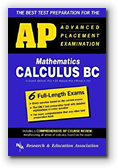
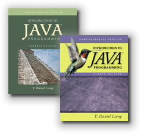

CS 170 Syllabus, Spring 2010

Hello, my name is Stephen Gilbert. Welcome to the CS 170, Java Programming I information page. Java Programming I is a transfer class for Computer Science (as well as some other science) majors. CS 170 is typically the first class in the Computer Science sequence, and is required if you intend to take advantage of the UCI SMART-ICS transfer program.
In Spring 2010, we'll again be offering three sections of CS 170: two hybrid classes, where half of the class will be conducted on campus and half will be conducted online, and one section that is entirely online, (except for the midterm and final exams, which are given on the OCC campus).
- Where and when is the course, and who's teaching?
- What does the course cover, and what do I need to know before I enroll?
- How can I successfully complete the course?
- What textbook and software will I need for the course?
- Course policies concerning attendance, late work, etc.
Who, Where, and When
Let's start with the where and when. The on-campus portion of CS 170 meets in room 105 in the Clark Computing Center. (Map: building 73 in the upper-left corner, across from the softball field, by the Adams St. Parking lot.).
- Section 31840 meets on Monday evening from 6:00 to 8:25 PM
- Section 30530 meets on Tuesday afternoon from 12:45 to 3:10 PM
- Section 32865 has no meetings except for the midterm and final exams. The exams will be given on Friday and Saturday at the end of the 7th and 15th weeks of class. I will schedule both morning and afternoon sessions on Saturday, as well as a Friday evening exam session.
In addition to these class meetings the hybrid sections of the course will have 3 hours of online lectures that you'll complete "on your own" each week. Generally, the lab or "hands-on" portion of the class will take place in the classroom. Students in the online-only section will complete their hands-on lab exercises on their own computers.
To complete the online portion of the coursework, you must have a computer that :
- has Internet access
- has PDF viewing software like Acrobat Player
- have the Java Runtime Environment (Version 5 or 6) installed.
If you want to complete your programming assignments at home, your computer must also allow you to install software development tools like DrJava. (You normally don't need to be an administrator to do this.)
You can use the computers in the Clark Computing Center open lab if you don't have a computer with Internet access at home. You can use the computers at a public library to read the portions of the online lectures and perhaps to do some exercises, but probably not to do the homework assignments, since library computers typically would not have the Java development software installed.
The online portion of CS 170 is not "work at your own pace". All exercises, quizzes, and assignments are due weekly just as with any traditional course; however, because you can arrange your hours any way you see fit, the hybrid format class is a great opportunity for those with irregular schedules since you only have to come to campus half as often.
Instructor Contact Information
- Stephen Gilbert
- Office : Clark Computing Center F
- Office hours : MW: 1:15-2:15, TU: 3:15-5:15
- Email : StephenGilbert@gmail.com or sgilbert@occ.cccd.edu
- Office phone : (714) 432-0202 ext 21173
- Home page : http://faculty.orangecoastcollege.edu/sgilbert/
What is CS 170 All about?
Here's the official course description from the OCC catalog:
This is a beginning course in the Java programming language. Students will learn object-oriented programming, and will create applets which can be incorporated into HTML documents for the World Wide Web.
At OCC, CS 170 is one of the first courses in the Computer Science major for students who intend to transfer to a 4-year institution. This class will introduce you to the principles of Computer Science, using the Java programming language; it isn't a "Web programming class" like HTML or JavaScript.
Prerequisites
In this class, you will learn to write programs, but you won't learn how to use a computer. Before you enroll, read the following section, and make sure you feel you've mastered the skills I've listed here. There is no prerequisite for this course but I assume that you are "computer literate". In the context of this course, that means you know how to:
- Install and run programs on your computer
- Create and save plain text files using a text editor
- Copy, move, delete and find files and folders
- Browse the World Wide Web and use email.
If you don't feel comfortable doing these things, you should take either CIS 100 or CS 111, which are basic "computer literacy" courses.
You do not have to have any programming experience, but you might find the course easier if you've successfully completed a course in another programming language such as Visual Basic, Pascal, C++ or JavaScript.
Goals and Objectives
In this course you'll learn how to write computer programs, using the Java programming language. On successful completion of the course, you will be able to:
- Explain the Java programming model, particularly its support for object-oriented software development, and cite its strengths and weaknesses.
- Learn to use a variety of development tools for creating Java programs.
- Design and code Java programs, applets and applications, console and GUI programs, using Java's Swing and AWT class libraries.
- Read and understand the official Java documentation sufficiently well that it serves as a primary vehicle for further learning.
In addition, the class now has Student Learning Outcomes or SLOs. Students will be able to:
- Create, compile, execute, and test Java applications and applets by applying object-oriented programming techniques, including designing classes and methods, and implementing concepts of polymorphism and inheritance.
- Implement selection structures (if/else and switch), repetition structures (while, do/while, and for), and one- and two-dimensional arrays.
How can I succeed in CS 170?
Here's the information you need to succeed in CS 170. Below you'll find information about the course workload, the exams, quizzes, exercises, discussion, and homework, as well as information on how you'll be graded.
How much time will I have to spend on CS 170?
Everybody learns in different ways and at different speeds; in general though, you should plan on spending about two hours each week outside of class, for each class lecture hour, if you're an average student and want to receive an average (C-B) grade. For CS 170, that translates to about 8 hours a week, in addition to the five hours of class time; the five hours of class time includes both the in-person class time and the online class lectures. That adds up to about 13 hours a week on CS 170, whether you're taking the online-only or a hybrid section.
 If you're a good student or you're satisfied with a lower grade, you may
get by with less. If you have difficulty with the material, or if you want
to receive an A in the course, you'll probably have to spend more time.
If you're a good student or you're satisfied with a lower grade, you may
get by with less. If you have difficulty with the material, or if you want
to receive an A in the course, you'll probably have to spend more time.
Rather than trying to get your extra hours in by staying up all night every Saturday and Sunday, try to budget your time. Spend a couple hours every day, one hour reading the material, and one hour in the computer lab, or on your computer at home, working on problems. Remember, though, that this is college and it's up to you to remember your deadlines and to arrange your time appropriately.
Remember, also, that at least half of this class is online. The online lectures and exercises are part of your classroom time, not part of the additional study and homework time referred to here.
What exams and quizzes will I take?
There are 6 exams in this class: four hands-on practical proficiency exams, one written midterm and one written final. All exams are closed book, closed notes. Each of the six exams is one hour long.
If you are in the online-only section, you will take the first three exams during the midterm and the second three during the final exam. If you are in one of the hybrid sections, you'll take the exams during your regular class section.
Quizzes
I will give weekly online quizzes which you'll take using Blackboard Vista. Quizzes are designed to make sure you read the lessons, understand the material and to highlight any areas of concern. These quizzes will not count as part of your final grade, but are for practice only. You'll certainly want to take them to see what kinds of questions you can expect on the midterm and final exams.
What about programming exercises, labs and homework?
 Learning to program is a lot like learning to play the tuba;
you'll never be any good unless you practice. To help you do
this, you'll spend most of your out of class time,
and a portion of each class period, writing programs. Each
week I'll assign several problems from the textbook
along with some problems that I've made up.
Learning to program is a lot like learning to play the tuba;
you'll never be any good unless you practice. To help you do
this, you'll spend most of your out of class time,
and a portion of each class period, writing programs. Each
week I'll assign several problems from the textbook
along with some problems that I've made up.
Some of these will be short problems that you can do in a few minutes; most will take between fifteen minutes to a half hour. At least one problem each week should take you a couple of hours to complete.
You should try to complete these assignments (to the best of your ability) by the due date, when I'll post a solution, (or go over the solution in class). I'll generally supply you with a test program, so you can "grade" yourself after you've finished the problem. If you do poorly on a problem, you can read through the solution, and then rewrite and regrade your solution. When you rewrite your program, don't refer to the posted solution—that way you'll make sure you really understand how to write it.
I will not collect the assignments, and they won't count as part of your final grade.
Homework Q & A
 That's an intriguing policy you have there, but I have
some questions. If you don't collect and grade the homework
assignments, won't students just wait until you've
posted the solution and then just "read the answer"?
Can you explain a little more?
That's an intriguing policy you have there, but I have
some questions. If you don't collect and grade the homework
assignments, won't students just wait until you've
posted the solution and then just "read the answer"?
Can you explain a little more?
 Thanks for your input. First, I think that it's really important that
students do get feedback on all of their assignments and not just
get credit for "turning them in". I like to think of the assignments
as similar to the "practice" problems you'd find in an Advanced Placement
Exam Preparation book.
Thanks for your input. First, I think that it's really important that
students do get feedback on all of their assignments and not just
get credit for "turning them in". I like to think of the assignments
as similar to the "practice" problems you'd find in an Advanced Placement
Exam Preparation book.

Even though students can look in the back of the exam-prep book for the answers, almost no-one does, since it defeats the purpose of purchasing the book. Similary, while it's possible that some students will wait for the solution before attempting the problem, that's really not the most effective use of a homework assignment. In my mind, the whole purpose of assignments is learning, and checking whether you have, in fact, learned what you think you've learned. In my case, I learn best when I "do it wrong" the first time, and then go and correct my mistakes.Second, using the traditional "professor grades your assignment" strategy, I find that I have to make all of my problems short and simple, just because of the time contraints required for grading. With each student grading just one assignment, (their own), I can assign more problems, and they can be more challenging and interesting.
Finally, it's been my experience that when homework counts as part of the grade, students are tempted to "borrow" their classmates' work to increase their own scores. I think that this really tends to distort the actual grading process and is most unfair to those who are actually the best students.
 Well, like, no offence, but couldn't we just like not do the
homework at all? I mean, we wouldn't do that,
but some other students might. I mean like why should we even
put in the effort if we can get the same grade just doing
nothing at all. We don't want to do a whole bunch of
extra work for nothing. You should, like give some
credit for doing all that work, or at least give us some
extra-credit.
Well, like, no offence, but couldn't we just like not do the
homework at all? I mean, we wouldn't do that,
but some other students might. I mean like why should we even
put in the effort if we can get the same grade just doing
nothing at all. We don't want to do a whole bunch of
extra work for nothing. You should, like give some
credit for doing all that work, or at least give us some
extra-credit.
Those are all really good points. Let's see if I can answer them.
The whole point of giving you assignments is so that you can
learn how to program. Programming assignments are practice
just like tuba practice or football practice, or the workouts you
do before running a 10K race. If you're going to run in the LA
marathon, you might workout by watching runners on TV, but
you probably wouldn't be very successful the day of the race.
Many of you may spend twenty or thirty dollars a month so that you can go to Bally or LA Fitness and work out. Programming exercises and assignments work the same way; they aren't for my benefit, but for yours. Try to think of me as your "personal trainer". I'm telling you that if you use the assignments to learn the material, you should be able to handle the programming exams; but if you just "blow them off" or "look up the answers" grade, you'll be really unhappy come exam time.
Personally, I've found that assignments and homework help me find those areas where I think I understand something, but I really don't. Trying to apply what I've learned brings out all of the "hazy" spots. With this policy, when you find out that you don't really understand something, you can clear up the misconception by redoing the problem. That's why assignments and exercises are different from an assessment (testing) situation, where you're being graded on how well you understand. I try to save that for the exams and quizzes.
"Labs" and Hands-On Exercises
CS 170, as you know, is a lecture-lab class. Unlike in
Biology or Chemistry, where you have a separate lab period,
the CS 170 lab is integrated with the lecture.
 This has a couple of advantages, but the most important one is
that you get some hands-on experience right when we're
discussing a topic, instead of waiting until you try to
do your homework. That way, if you have any problems, you
have a chance to ask questions and correct your
misconceptions earlier, instead of later.
This has a couple of advantages, but the most important one is
that you get some hands-on experience right when we're
discussing a topic, instead of waiting until you try to
do your homework. That way, if you have any problems, you
have a chance to ask questions and correct your
misconceptions earlier, instead of later.
For the on-campus classes, I'll have you complete an "in-class" (IC) exercise document with screen-shots and answers to questions, which you'll turn in as a PDF file before you leave class. If you're in the online-only section you'll do the same thing: you'll need to answer the questions and do the exercises presented in the online lecture and submit them each week.
I'll give you instructions about how to do that during the the first week of class. These online "in-class" exercises will be worth 5% of "extra-credit" points towards your total grade.
Class Participation
One of the greatest learning resources at your disposal are the other students you'll meet in this class. Take advantage of them; ask the person next to you to help you with something you don't understand, or offer to help someone else who is struggling.
To encourage you to help each other, I want you to use the online discussion area to ask all of your technical questions, instead of sending me an email message. Let's keep email for "personal" correspondence—things like "I'll be missing class this Tuesday", instead of questions like "Why do I get this error message when I compile?" If you ask these types of questions on the discussion board, you'll help all the other students who are having the same problem, but didn't think to ask. (I will answer questions posted on the discussion board, after I've given your fellow students an opportunity to respond. I also read all of the messages on the discussion board, even if I don't reply.)
I will post class announcements and general tips in the Announcements section in the online classroom. You should make sure you check regularly (at least a couple times a week) for new announcements.
How will I be graded?
You may take this course for a grade, or on a CR/NCR basis. If you take the course for credit/no-credit, you must obtain a score equivalent to a "C" to get credit. (If you're transferring, though, make sure that the institution you're transferring to will accept CR/NCR; most institutions won't if it's a requirement for your major.)
Grades will be assigned based on the following weights:
| Programming Exam 1: Simple IPO Programs | 10% |
| Programming Exam 2: Functions and Control Flow | 10% |
| Written Midterm Exam | 20% |
| Programming Exam 3: |
15% |
| Programming Exam 4: |
15% |
| Written Final Exam | 30% |
| Class-participation/In-class Exercises | 5% |
Letter grades will be assigned using the following calculation:
- The average score in the class is calculated. This average is used as the "cutoff" score for a "B".
- The standard deviation is used as the "range" for each letter grade.
This is similar to a curve, but different, because the number of students in each category are not necessarily a normal distribution. In an average class this results in about 30% of the students getting As, 35% gettting Bs, 30% getting Cs and the rest Ds and Fs.
I also calculate the grades using the traditional 90, 80, 70, 60 cutoffs. In the unlikely event that this would be more advantageous to you, I will use that method.
What textbook and software will I need?
|
 |
Introduction to Java Programming 7th or 8th, Comprehensive or Brief by Y. Daniel Liang ISBN: 9780136012672 (7th) Comprehensive ISBN: 9780132130806 (8th) Comprehensive The text should be available in the OCC Bookstore, or from Amazon and other online booksellers. At Amazon, it costs about $103 new. For this class, you can purchase the Brief edition instead (although not from the bookstore). There was only a $10 difference between the Brief and Comprehensive prices, but there is about a $20 difference if you purchase from Amazon. |
Many of you prefer to purchase a used book (or share a book with another student). You can even purchase an entirely different textbook if you like. The textbook is designed to give you more information than the online lessons do, but you don't need the textbook to successfully pass the class. All of the material on the written exams will be in the online lessons.
Software
All of the software you need to complete this course is installed on the computers in the OCC Clark Computing Center. However, many of you will want to work at home, especially if you are in the online section. Here is a short list of the software you'll need to install on your computer to complete the course. All of this software is free.
Java Software
You need to have version 5 or version 6 of the Java Runtime
Environment installed on your computer (if you want to do your
homework at home.) To get the software just go to
http://java.com,
click the "Download" button and follow the instructions.
IDE
This semester rather than switching between several different
development environments, we'll be using the
Dr. Java IDE the entire semester.
Dr. Java is a free, open-source program, written
in Java. It was developed and is maintained by the
PLT group at Rice University.
Please wait until the first week of class to install Dr. Java. We use a customized installation, and I'll provide you with specific instructions for installing and customizing the program on your computer.
All of this software is installed on the machines in the Computing Center if you don't have a computer of your own.
What are the "rules" for this course?
Late Work
Since none of your homework assignments are used for calculating your grade, there is no reason to turn in "late work". I will provide at least two "makeup" days for the programming exams where you can take one of the programming exams you missed, or retake one of the exams that you did poorly on. These makeups will take place after the midterm and after the final.
I will give you at least 5% extra-credit for submitting the in-class exercise document each week.
Attendance and Withdrawal
Quiz material is taken from the lecture and the online lessons, so it's important for you to complete the material. If you miss two or more classes, (especially at the beginning of the semester, when other students are trying to add the class), you may be dropped without notice. (Of course, this only applies to those who are enrolled in the on-campus sections of the course.)
Don't assume, though, that you will be automatically dropped if you fail to complete the material. It is your responsibility to withdraw from any class. If you stop attending, yet fail to withdraw, you will receive a grade of 'F'.
Please pay special attention to the OCC drop deadlines. Every semester I have students who want to drop the class after the deadline to drop has already passed. Those students end up getting an 'F' in the class if they are unable to complete the coursework. I do not give Incomplete grades.
Academic Honesty
Programming by its nature relies on learning from the work of others. You are encouraged to examine each other's code and to discuss various approaches and coding styles. You won't really learn anything, though, if you don't "try it yourself".
In this regard, discussing the general method used to solve a problem is certainly encouraged. Taking another student's source code and modifying it is really counter-productive; you learn to program by working out the programming exercises and assignments. If you don't do the assignments yourself, you won't learn how to program, and you won't be able to pass the programming exams.
When it comes to testing time, I expect you to maintain a high level of academic honesty. Cheating on exams will result in course failure. (While the quizzes are open book, you'll get the most out of them if you treat them as closed-book, like the exams.)
Disruptive Behavior
You are entitled to an environment that encourages learning, as are all your fellow students. You should not behave in a manner that negatively impacts other class members. In a classroom. In an online class, disruptive behavior includes "flaming" or harassing email, as well as posting offensive material on your class Web site.
I expect all of you to be polite, respectful, and helpful to your fellow students; in short, I expect you to act like adults should should act. If, in my judgment, your behavior negatively impacts the rest of the class, you may be subject to disciplinary action.
Disabilities
If you have a disability that may impede your ability to successfully complete this course, you should contact the Disabled Student's Center (432-5807 or 432-5604 TDD) not later than the first week of the course. Their staff will assist you in arranging accommodations that can help you meet course requirements.
Reservation of Rights
I reserve the right to change this syllabus, including, without limitation, these policies, without prior notice.